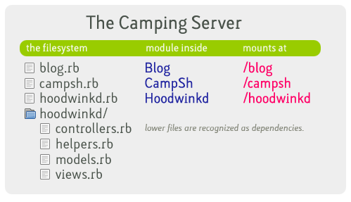

The Camping Server #
Lately, I’ve been writing little Camping apps that I can just drop in a directory and they get automatically mounted. I’m running a personal web server with a wiki, CampSh, and development versions of Balloon and Hoodwink.d.

Both Mongrel and FastCGI can be set up to do this. Therefore: the ease of PHP installation, but the cleanliness of mini-Rails.
This idea has been blossoming on the wiki: TheCampingServer. It’s just a set of rules:
- Load all Camping apps in a directory.
- Load new apps that appear in that directory.
- Mount those apps according to their filename. (e.g. blog.rb is mounted at /blog.)
- Run each app’s `create` method upon startup.
- Reload the app if its modification time changes.
- Reload the app if it requires any files under the same directory and one of their modification times changes.
- Support the `X-Sendfile` header.
For WEBrick or Mongrel, this setup can be accomplished by using the bin/camping script included with the gem:
camping -s mongrel /var/www/camping/
For FastCGI, you can use a script like this:
#!/usr/bin/env ruby
require 'rubygems'
require 'camping/fastcgi'
Camping::Models::Base.establish_connection(...)
Camping::FastCGI.serve("/var/www/camping")
I’d really like to see distributions offer a package which would allow simple setup of TheCampingServer, just as you see with PHP. If you’re interested in seeing this happen for the upcoming Camping 1.5 release, introduce yourself on the camping-list.
omgz0rs
Yay!
topfunky
I’m working on a simple Capistrano recipe for deploying my Camping apps and will follow this system.
I’ll try to keep the recipe under 4kb.
Danno
Dagnabit _why, are you trying to solve the Rails deployment difficultness all by yourself?!
Don’t you know that for this stuff to be Enterprise Ready® there has to be a big committee meeting?!
People can’t just go all willy nilly making things work!
why
Let’s give Jonas Pfenniger some credit. He’s my committee.
why
I think I’m going to add one more rule which is: if a script is symlinked to index.rb, it’ll be mounted at the root slash.
LninYo
frikking brilliant man! subversion is your specialty.. o sneaky one!! :)
kastner
This is cool – I got something similar working the other day because I was tired of using php for my little scripts http://camping.metaatem.net/ now I just drop new scripts in.
Thanks ‘boose!
rabidrobot
Pretty neat why!
jogloran
Anyone know what those fonts in the image are?
FlashHater
This is the awesomeness! When I get home I’m gonna try it .
powr-toc
Keep it up _why!
ming
jogloran: not definite, but could be some variant of FF Max
erik
On Windows the font is called ‘Trebuchet MS’.
wrm
Sorry, erik, but that’s not Trebuchet MS, even on Windows.
Platte Daddy
It looks for all the world like an Emigre font, but I worked all the way through Typetease and didn’t find an exact match.
Argh!
MenTaLguY
I’m stumped, and that lower-case “i” is quite distinctive, too. If you find that “i” you’ll most likely have found the font in question.
But just watch it turn out to be a font that ships with OS X or something. :P
Adam
That really is quite nice. Three cheers for clean, cool, solutions!
phred
Then again, I’ve been laying down rails for 9 hours…
=)
mathieu
I don’t get it….
I use Camping::FastCGI.start
where would I save that extra script? does it replace the postamble ?
thanks
why
You want FastCGI to execute that script. See, if you want FastCGI to execute your app directly, use a postamble. Otherwise, put the postamble in another file (as shown above.)
Lots more about FastCGI and Camping in the docs.
MJ
Hey why, I’ve been trying to get camping to serve up images but I just can’t make it work. Are there any other examples besides this: https://code.whytheluckystiff.net/camping/wiki/ServingStaticFiles
I’m running this in Webrick.